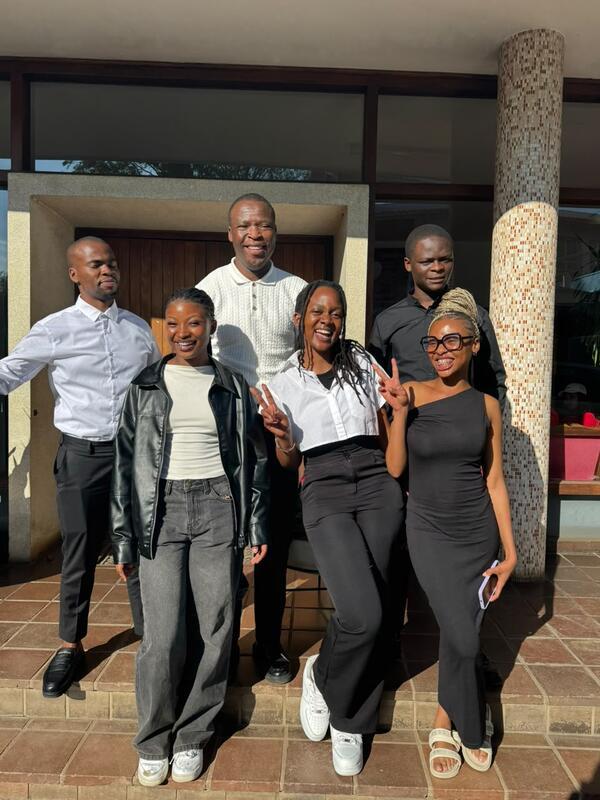

Our team
Career Compass SA is run by a team committed in supporting learners across South Africa.

Philakahle Tembe
Founder

The Team
Together as a team we drive Career Compass SA forward.
Career Compass SA is a youth-focused initiative founded by Philakahle Tembe, a final-year student at the University of KwaZulu-Natal (Pietermaritzburg campus).
Career Compass SA is committed to supporting high school learners in making informed decisions about their future through career guidance, academic support (tutoring), and university & TVET application assistance.
We aim to bridge the gap between school and post-matric opportunities by equipping learners with the right knowledge, skills, and direction — so no learner has to figure it out alone.
The programme is designed to assist learners in making informed career decisions, choosing the correct subject streams (Grade 9 → Grade 10), understanding university and TVET requirements, successfully completing applications, accessing funding through NSFAS and bursaries, and improving academic performance.
Whatever school or learner we're working with, Career Compass SA is committed to:
Career Compass SA is run by a team committed in supporting learners across South Africa.
Founder

Together as a team we drive Career Compass SA forward.
See how sessions are delivered and what it means for your learners.